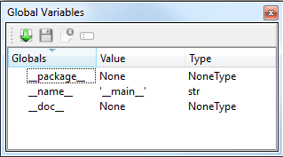

Global Variables¶
All variables which are defined in python console or in any python script are stored as global variables. These can be seen in the Global Variables Toolbox.
In this toolbox it is possible to export ( ), import (
), import ( ), delete () or rename () variables.
), delete () or rename () variables.